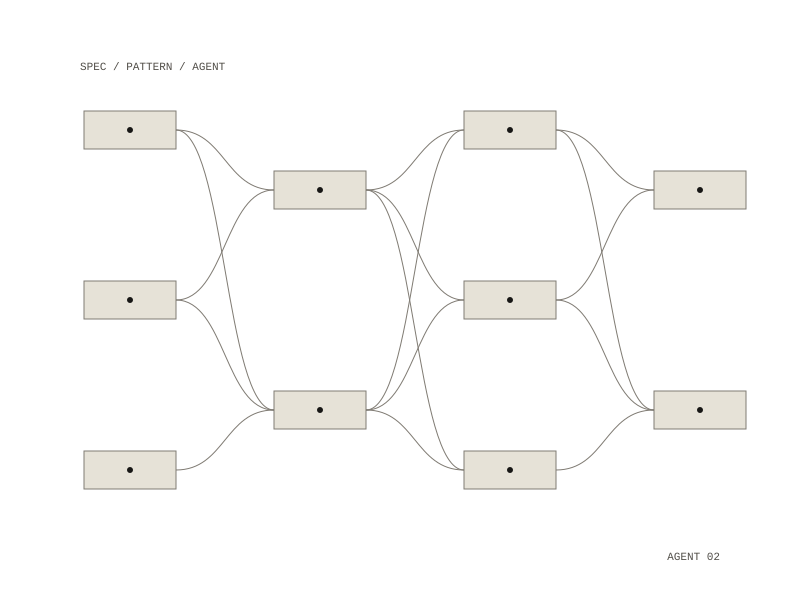

Agent factory
An agent factory: it turns short specs, plus a library of written patterns kept in a research vault, into agents for a coding assistant. The agents' rules come from the pattern library, so when a pattern changes, every agent that enforces it changes too.

How it works
Each agent is one YAML file in specs/, giving its name, a description, the tools it may use, the patterns it enforces, a refusal condition, and the body of its instructions. make generate looks up each pattern name in the vault, pulls that pattern's summary into the agent file, and writes the result out. A pattern that does not exist is a hard error.
The first two agents it is designed to make are a design critic and a direction interrogator. The design critic's spec tells it to review an interface against the design patterns: to look for the token file first, measure the contrast of every colour that carries text, inventory each view's empty, loading, error and first-run states, and count variants of buttons, font sizes and fields. The spec requires every finding to cite a file and line and the pattern rule it breaks.
Rules the generator enforces
- every generated agent cites the vault patterns it enforces; a spec with no patterns, or one citing a pattern the vault does not hold, is rejected
- generated agents are build artifacts marked "do not edit by hand"; the spec is the source
- the factory refuses to write to any directory other than its own output folder
- every agent declares what it will not do and when it hands back
- the container runs as an unprivileged user with all capabilities dropped
These five replaced an earlier set of seven chosen before the project had a job; the original set is kept in the first commit as an example of that failure.
Also in the repository
The repository is also the single home of the working setup: every slash command, every workflow script and the hand-written agents live here and are linked into place by make install. The stack is Python 3.12 with one dependency, run through Make and Docker; the generator is text templating over Markdown.
Python in Docker, driven by Make
one YAML spec per agent, plus a folder of pattern notes
agent instruction files, each citing the patterns it enforces